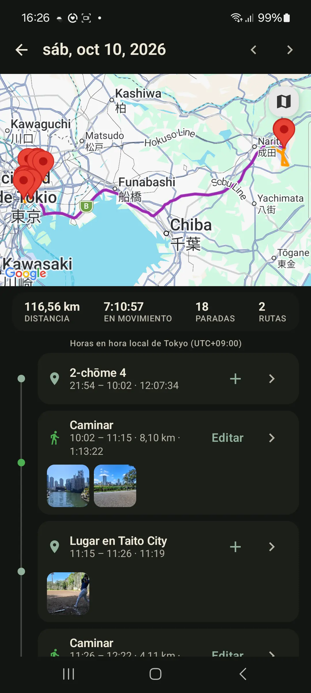

Historial de ubicación privado
Alternativa privada a Google Timeline para historial de rutas en Android
Si quieres recordar dónde has estado sin vincular cada viaje a un perfil en la nube, GPS Logger te da un modelo deliberado: inicia una ruta, guárdala en tu teléfono, toca cualquier día registrado para ver paradas y movimientos, y exporta cuando lo necesites. Trae una exportación de Google Timeline, y el metro, los vuelos y los teleféricos siguen con su nombre.
Respuesta rápida
GPS Logger es una app privada de historial de rutas para Android. Encaja si quieres grabaciones GPS iniciadas por ti, una timeline diaria, un atlas personal, exportación GPX/KML y ninguna cuenta. No es un registro silencioso siempre activo; tú decides cuándo empieza y termina la grabación.

Por qué buscar más allá del historial automático
El historial automático puede ser cómodo, pero suele implicar dependencia de la nube, exportaciones poco claras, viajes perdidos o riesgo al migrar de dispositivo. Para muchas personas, la mejor respuesta no es grabarlo todo, sino guardar las rutas importantes y mantener los archivos portables.
La parte tipo Timeline: Historia del día
Historia del día es la vista de memoria diaria. Toca un día grabado en el calendario y GPS Logger construye una timeline virtual desde tus tracks guardados: movimientos, paradas, lugares con nombre, distancia en movimiento, tiempo en movimiento y momentos. Es una vista; no divide, reescribe ni sube tus tracks.
Eso la hace útil para días de viaje, excursiones, trabajo de campo, paseos urbanos, desplazamientos y memoria de rutas cotidiana: no solo una línea en un mapa, sino la forma del día.
Añade las fotos del día y aparecen en la parada o el tramo donde las hiciste. Una foto sin GPS igual encuentra su sitio, porque la colocación usa la hora en que se tomó. Las imágenes se quedan en tu galería. La app guarda un enlace en el teléfono, y no se sube ni se cambia nada.
Qué hace distinto GPS Logger
- Tú inicias la grabación. Caminatas, excursiones, rutas, viajes por carretera, desplazamientos y trabajo de campo se convierten en tracks guardados explícitos.
- El historial permanece local por defecto en la base de datos de la app en tu teléfono.
- Los días se vuelven legibles. Mapa con paradas, movimientos, lugares, momentos y las fotos de ese día, en orden cronológico.
- Los viajes importados conservan cómo te moviste. Metro, Vuelo, Barco y Teleférico llegan ya con nombre.
- El archivo es visual. Mapa de toda tu vida, calendario, lugares repetidos, países y estadísticas por track.
- Los datos son portables. Exporta tracks individuales como GPX o KML, o crea un ZIP GPX de todo el historial.
- Compartir en vivo es aparte. Cuando está activo, App Cloud comparte solo la posición actual, no un rastro en servidor de tus viajes guardados.
Cuándo GPS Logger encaja bien
Úsalo si quieres un diario de viaje privado, un cuaderno de rutas al aire libre, un archivo de desplazamientos, un recuerdo de road trips, un registro de visitas de campo o una colección GPX exportable. Es especialmente útil si tu objetivo es recordar y poseer tus datos de ruta en vez de compartir entrenamientos, alimentar un perfil en la nube o construir una identidad social pública.
Cuándo no es la opción adecuada
Si quieres una timeline totalmente automática de cada tienda, estación de tren, cafetería y movimiento breve sin inicio manual, GPS Logger es intencionalmente más controlado que eso. El inicio automático opcional tras reiniciar ayuda a usuarios concretos que quieren grabación persistente, pero la grabación normal sigue siendo una acción visible que tú controlas.
Cómo traer tu historial de Google Timeline
Google ahora guarda Timeline en tu teléfono y puede exportarlo como archivo. GPS Logger importa ese archivo, así que años de historial llegan a tu calendario, tus historias del día y tu atlas, junto a las rutas que grabes.
- En tu teléfono Android, abre Ajustes → Ubicación → Servicios de ubicación → Timeline.
- Toca Exportar datos de Timeline y guarda el archivo (normalmente
Timeline.json) en el teléfono. - En GPS Logger, abre Ajustes → Importar Google Timeline o GPX, elige el archivo e inicia la importación.
Los nombres de los menús varían un poco según el fabricante. También funcionan las exportaciones antiguas de Timeline desde Google Takeout y los archivos de Timeline exportados en un iPhone. Cada desplazamiento que registró Timeline se convierte en un viaje de tu historial. La importación es ilimitada en todos los planes; la versión gratuita muestra tus 10 viajes más recientes en la app y Pro los muestra todos.
Esos viajes conservan cómo te moviste. Un viaje en metro sigue siendo Metro, un vuelo sigue siendo Vuelo, un ferry sigue siendo Barco, y un teleférico, góndola o funicular sigue siendo Teleférico. La equitación también pasa, junto con caminar, ciclismo, autobús y tren. GPS Logger conserva el modo que nombra el archivo de Timeline, en lugar de volver a adivinarlo desde una línea fina de puntos. Un modo que el archivo no nombra se lee de los puntos, y una etiqueta de caminata en un tramo que es claramente un trayecto en coche se corrige. Los archivos GPX de otras apps no traen esa etiqueta, así que se leen desde sus puntos.
Cómo migrar tracks antiguos
Si ya tienes archivos GPX de otra app o dispositivo, impórtalos en GPS Logger y velos en un solo atlas. La importación masiva acepta varios archivos GPX o una copia de seguridad ZIP, sin límite de importación en ningún plan.
Más guías
- Grabar y exportar tracks GPX en Android
- Importar archivos GPX en Android
- Por qué el registro GPS offline importa para la privacidad
- GPS Logger vs. Strava y apps sociales de fitness
- Grabar un track GPS con la pantalla apagada en Android
Preguntas frecuentes
¿Puedo importar mi Google Timeline?
Sí. Exporta los datos de Timeline desde los ajustes de ubicación del teléfono y elige el archivo en GPS Logger en Ajustes → Importar Google Timeline o GPX. También funcionan las exportaciones antiguas de Google Takeout y del iPhone.
¿GPS Logger sube mi historial de rutas?
Los tracks guardados permanecen en tu dispositivo. Exportar escribe un archivo en el teléfono: un trayecto como GPX o KML, o tu historial como un ZIP de copia. Te quedas el archivo, o se lo pasas tú mismo a alguien. El archivo nunca se envía a un servidor. Compartir en vivo es aparte y envía solo tu posición actual mientras lo dejas activo. Tu propio servidor es la misma idea: solo la posición actual, y solo mientras lo dejas activo.
¿Puedo exportarlo todo?
Sí. Puedes exportar tracks individuales como GPX o KML y crear una copia de seguridad GPX ZIP de todo el historial.
¿Qué muestra la timeline diaria?
Puede mostrar un mapa, distancia en movimiento, tiempo en movimiento, paradas, tracks, caminatas o rutas en vehículo, las fotos del camino, lugares con nombre y momentos guardados de un día registrado.
¿Los viajes importados conservan cómo viajé?
Sí. Las importaciones de Timeline conservan el modo que nombra el archivo: Metro, Vuelo, Barco, Teleférico, Equitación, y caminar, ciclismo, autobús y tren. Un modo que el archivo no nombra se lee de los puntos, y una etiqueta de caminata en un tramo que es claramente un trayecto en coche se corrige. Los archivos GPX de otras apps se leen desde sus puntos.
¿Puedo importar archivos GPX antiguos?
Sí. GPS Logger importa archivos GPX y archivos ZIP, y añade las rutas a tu historial, calendario, timelines diarias y atlas.
¿Funciona sin cuenta?
Sí. Grabar, ver el historial, importar y exportar no requieren cuenta.